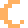
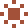

button
Button Raised controls for the primary action and secondary actions.
Save Cancel Unavailable
Source <button class="n-button" data-n-toast="Saved">Save</button> <button class="n-button n-button--secondary">Cancel</button> <button class="n-button" disabled>Unavailable</button>field
Field Recessed input surfaces with a visible label and keyboard focus.
Project nameUsed in the page title.
Source <label class="n-field">Project name<input placeholder="Choose a name"><span class="n-field__help">Used in the page title.</span></label>switch
Switch A native checkbox with a tactile visual track.
Source <label class="n-switch"><input type="checkbox" checked><span class="n-switch__track" aria-hidden="true"></span>Keep drafts</label>card
Card Content panels use the canvas color and a shallow edge.
A place for content. Clear hierarchy, without a decorative border.
Source <div class="n-card"><strong class="n-item">A place for content.</strong><p class="n-small">Clear hierarchy, without a decorative border.</p></div>label
Label A small recessed label for status or metadata.
Local processing
Source <span class="n-label">Local processing</span>code
Code System monospace for commands and source examples.
Nas.configure({ motion: "quiet" });Source <pre class="n-code"><code>Nas.configure({ motion: "quiet" });</code></pre>loading
Loading Pixel steps indicate active work, with an accessible progress label.
Source <div class="n-loading" role="progressbar" aria-label="Loading example" aria-valuenow="6" aria-valuemin="0" aria-valuemax="12"><span class="full"></span><span class="full"></span><span class="full"></span><span class="full"></span><span class="full"></span><span class="full"></span><span></span><span></span><span></span><span></span><span></span><span></span></div>tabs
Tabs Arrow keys move between panels; Home and End select the edges.
Overview Details
The overview panel.
The details panel.
Source <div class="n-tabs" data-n-tabs role="tablist" aria-label="Example views"><button id="tab-first" role="tab" aria-selected="true" aria-controls="panel-first">Overview</button><button id="tab-second" role="tab" aria-selected="false" aria-controls="panel-second" tabindex="-1">Details</button></div><p id="panel-first" role="tabpanel" aria-labelledby="tab-first">The overview panel.</p><p id="panel-second" role="tabpanel" aria-labelledby="tab-second" hidden>The details panel.</p>accordion
Accordion Native disclosure with the shared visual hierarchy.
What is included? Tokens, components, pixel artwork, and the Orbi engine.
Source <details class="n-accordion"><summary>What is included?</summary><div class="n-accordion__content">Tokens, components, pixel artwork, and the Orbi engine.</div></details>dialog
Dialog A native modal restores focus to its trigger when dismissed.
Open dialog Ready to continue? Your current settings stay in place.
Close
Source <button class="n-button n-button--secondary" data-n-open="example-dialog">Open dialog</button><dialog class="n-dialog" id="example-dialog"><h3 class="n-title">Ready to continue?</h3><p>Your current settings stay in place.</p><div class="n-dialog__actions"><button class="n-button n-button--secondary" data-n-close>Close</button></div></dialog>commands
Commands Searchable actions with keyboard navigation. Press Ctrl K.
Source <button class="n-button n-button--secondary" data-n-open="commands">Open commands</button><dialog class="n-dialog n-commands" id="commands" data-n-command><label class="n-field">Find an action<input data-n-filter placeholder="Search commands"></label><div class="n-command-list"><button class="n-command" data-n-item data-n-toast="Project saved">Save project <kbd class="n-kbd">Enter</kbd></button><button class="n-command" data-n-item data-n-close>Close commands</button><p data-n-empty hidden>No matching actions.</p></div></dialog>notification
Notification Status messages pause while hovered or focused.
Show notification
Source <button class="n-button n-button--secondary" data-n-toast="Your changes were saved.">Show notification</button>tooltip
Tooltip A small hint remains available to keyboard users.
Hover or focus
Source <button class="n-button n-button--secondary n-tooltip" data-tip="Stored on this device">Hover or focus</button>signature
Signature The N identifies Nas as the author; it is not a product logo.
Source <img src="assets/signature/signature-n.svg" alt="Nas signature" width="104" height="72">icons
Icons Small pixel symbols use whole-number scaling.



Source <div class="icon-row"><img src="assets/icons/bell.svg" width="48" height="48" alt="Bell"><img src="assets/icons/lock.svg" width="48" height="48" alt="Lock"><img src="assets/icons/moon.svg" width="48" height="48" alt="Moon"><img src="assets/icons/sun.svg" width="48" height="48" alt="Sun"><img src="assets/icons/terminal.svg" width="48" height="48" alt="Terminal"></div>orbi
Orbi A deterministic pixel mascot with poses, gestures, dragging, and secrets.
Source <canvas id="component-orbi" width="56" height="46" aria-label="Interactive Orbi mascot" tabindex="0"></canvas>mini-orbi
Mini Orbi Hand-tuned artwork at 16, 32, and 64 pixels.
Source <div class="icon-row"><canvas class="mini" data-size="16" width="16" height="16" aria-label="Orbi at 16 pixels"></canvas><canvas class="mini" data-size="32" width="32" height="32" aria-label="Orbi at 32 pixels"></canvas><canvas class="mini" data-size="64" width="64" height="64" aria-label="Orbi at 64 pixels"></canvas></div>expressions
Expressions The same renderer draws every expression and both themes.
Source <div id="expressions" class="expression-grid"></div>grid
Activity grid A decorative pixel grid with sample values, not account statistics.
Source <div class="activity-grid" role="img" aria-label="Decorative activity grid with sample data"><i style="background:var(--grid-0)"></i><i style="background:var(--grid-3)"></i><i style="background:var(--grid-2)"></i><i style="background:var(--grid-1)"></i><i style="background:var(--grid-1)"></i><i style="background:var(--grid-0)"></i><i style="background:var(--grid-3)"></i><i style="background:var(--grid-2)"></i><i style="background:var(--grid-2)"></i><i style="background:var(--grid-1)"></i><i style="background:var(--grid-0)"></i><i style="background:var(--grid-3)"></i><i style="background:var(--grid-3)"></i><i style="background:var(--grid-2)"></i><i style="background:var(--grid-1)"></i><i style="background:var(--grid-0)"></i><i style="background:var(--grid-0)"></i><i style="background:var(--grid-3)"></i><i style="background:var(--grid-2)"></i><i style="background:var(--grid-1)"></i><i style="background:var(--grid-1)"></i><i style="background:var(--grid-0)"></i><i style="background:var(--grid-3)"></i><i style="background:var(--grid-2)"></i><i style="background:var(--grid-2)"></i><i style="background:var(--grid-1)"></i><i style="background:var(--grid-0)"></i><i style="background:var(--grid-3)"></i><i style="background:var(--grid-3)"></i><i style="background:var(--grid-2)"></i><i style="background:var(--grid-1)"></i><i style="background:var(--grid-0)"></i><i style="background:var(--grid-0)"></i><i style="background:var(--grid-3)"></i><i style="background:var(--grid-2)"></i><i style="background:var(--grid-1)"></i><i style="background:var(--grid-1)"></i><i style="background:var(--grid-0)"></i><i style="background:var(--grid-3)"></i><i style="background:var(--grid-2)"></i><i style="background:var(--grid-2)"></i><i style="background:var(--grid-1)"></i><i style="background:var(--grid-0)"></i><i style="background:var(--grid-3)"></i><i style="background:var(--grid-3)"></i><i style="background:var(--grid-2)"></i><i style="background:var(--grid-1)"></i><i style="background:var(--grid-0)"></i><i style="background:var(--grid-0)"></i><i style="background:var(--grid-3)"></i><i style="background:var(--grid-2)"></i><i style="background:var(--grid-1)"></i><i style="background:var(--grid-1)"></i><i style="background:var(--grid-0)"></i><i style="background:var(--grid-3)"></i><i style="background:var(--grid-2)"></i><i style="background:var(--grid-2)"></i><i style="background:var(--grid-1)"></i><i style="background:var(--grid-0)"></i><i style="background:var(--grid-3)"></i><i style="background:var(--grid-3)"></i><i style="background:var(--grid-2)"></i><i style="background:var(--grid-1)"></i><i style="background:var(--grid-0)"></i><i style="background:var(--grid-0)"></i><i style="background:var(--grid-3)"></i><i style="background:var(--grid-2)"></i><i style="background:var(--grid-1)"></i><i style="background:var(--grid-1)"></i><i style="background:var(--grid-0)"></i><i style="background:var(--grid-3)"></i><i style="background:var(--grid-2)"></i><i style="background:var(--grid-2)"></i><i style="background:var(--grid-1)"></i><i style="background:var(--grid-0)"></i><i style="background:var(--grid-3)"></i><i style="background:var(--grid-3)"></i><i style="background:var(--grid-2)"></i><i style="background:var(--grid-1)"></i><i style="background:var(--grid-0)"></i><i style="background:var(--grid-0)"></i><i style="background:var(--grid-3)"></i><i style="background:var(--grid-2)"></i><i style="background:var(--grid-1)"></i><i style="background:var(--grid-1)"></i><i style="background:var(--grid-0)"></i><i style="background:var(--grid-3)"></i><i style="background:var(--grid-2)"></i><i style="background:var(--grid-2)"></i><i style="background:var(--grid-1)"></i><i style="background:var(--grid-0)"></i><i style="background:var(--grid-3)"></i><i style="background:var(--grid-3)"></i><i style="background:var(--grid-2)"></i><i style="background:var(--grid-1)"></i><i style="background:var(--grid-0)"></i><i style="background:var(--grid-0)"></i><i style="background:var(--grid-3)"></i></div>cover
Cover A project cover leaves room for the product name and its own mark.
Project. One purpose. Its own identity.
Source <div class="cover-example"><strong>Project.</strong><span>One purpose. Its own identity.</span></div>theme
Theme control Dark and light themes share semantic color roles.
Switch theme
Source <button class="n-button n-button--secondary" data-theme-toggle>Switch theme</button>